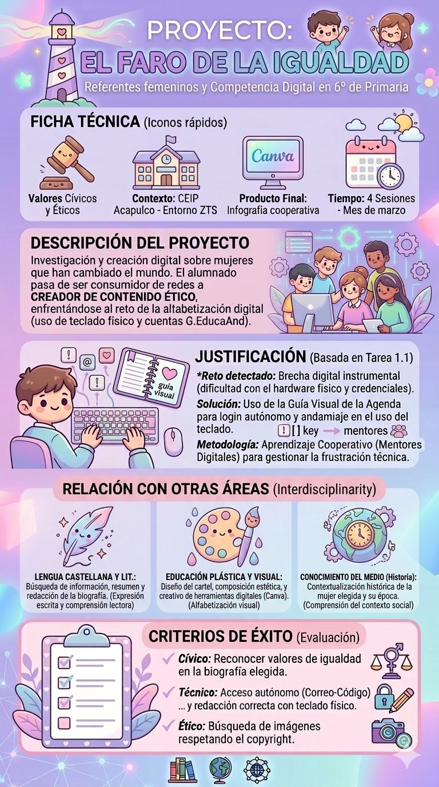

Texto
🏗️ 1. Datos Técnicos y Descripción
En este apartado se detallan los cimientos de nuestra Situación de Aprendizaje, diseñada específicamente para el contexto de nuestro centro.
📊 Ficha del Proyecto
Título: El Faro de la Igualdad: Rescatando referentes femeninos a través de la competencia digital.
Centro de interés: Visibilización de la mujer (8M) y superación de la brecha digital instrumental.
Nivel: 6º de Educación Primaria.
Temporalización: 4 sesiones de 60 minutos durante el mes de marzo.
Materia: Valores Cívicos y Éticos.
📝 Descripción General
El alumnado realiza una transición de consumidor pasivo a creador de contenido ético. El reto principal es la alfabetización digital aplicada: diseñar infografías en Canva sobre mujeres que han cambiado el mundo, practicando el uso de hardware físico (teclados, ratones) y la gestión de cuentas corporativas G.EducaAnd.
⚖️ Justificación Pedagógica y MRCDD
Este proyecto no es solo una actividad de diseño; es una respuesta directa a las necesidades detectadas en el CEIP Acapulco.
🔍 Origen de la Propuesta
Se detectó una brecha digital instrumental profunda: aunque el alumnado domina interfaces táctiles para el ocio, presenta dificultades con el teclado físico, el uso de tildes y la gestión del correo electrónico.
Solución: Uso de la Guía Visual de la Agenda para el login autónomo.
Metodología: Aprendizaje Cooperativo con la figura de "Mentores Digitales" para gestionar la frustración técnica.
🏆 Indicadores de Competencia Digital Docente
Como docente de nivel B2, este proyecto evidencia los siguientes indicadores:
1.3.B2.4: Gestión de la incertidumbre y adaptación de la planificación a contextos de brecha digital.
2.2.B2.1: Creación de secuencias de aprendizaje para la producción de contenidos digitales originales y transformadores.
🎯 Criterios de Evaluación y Metas del Proyecto
Para alcanzar el éxito en "El Faro de la Igualdad", evaluaremos el progreso del alumnado basándonos en cuatro pilares fundamentales que integran los valores y la competencia digital:
Ámbito Cívico: El alumno/a es capaz de reconocer, explicar y poner en valor los hitos de igualdad presentes en la biografía de la mujer referente elegida.
Ámbito Técnico: Se valora la capacidad de acceder de forma autónoma a las herramientas mediante el flujo de "Correo-Código" (G.EducaAnd) y la destreza en la redacción usando correctamente el teclado físico, incluyendo tildes y caracteres especiales.
Ámbito Ético: El alumnado debe demostrar responsabilidad al realizar búsquedas de imágenes, asegurándose de respetar siempre los derechos de autor (copyright) y las licencias de uso.
Ámbito Social: Se evaluará la colaboración proactiva y el respeto dentro del grupo cooperativo, especialmente durante el trabajo compartido en la nube y el soporte entre "Mentores Digitales".
